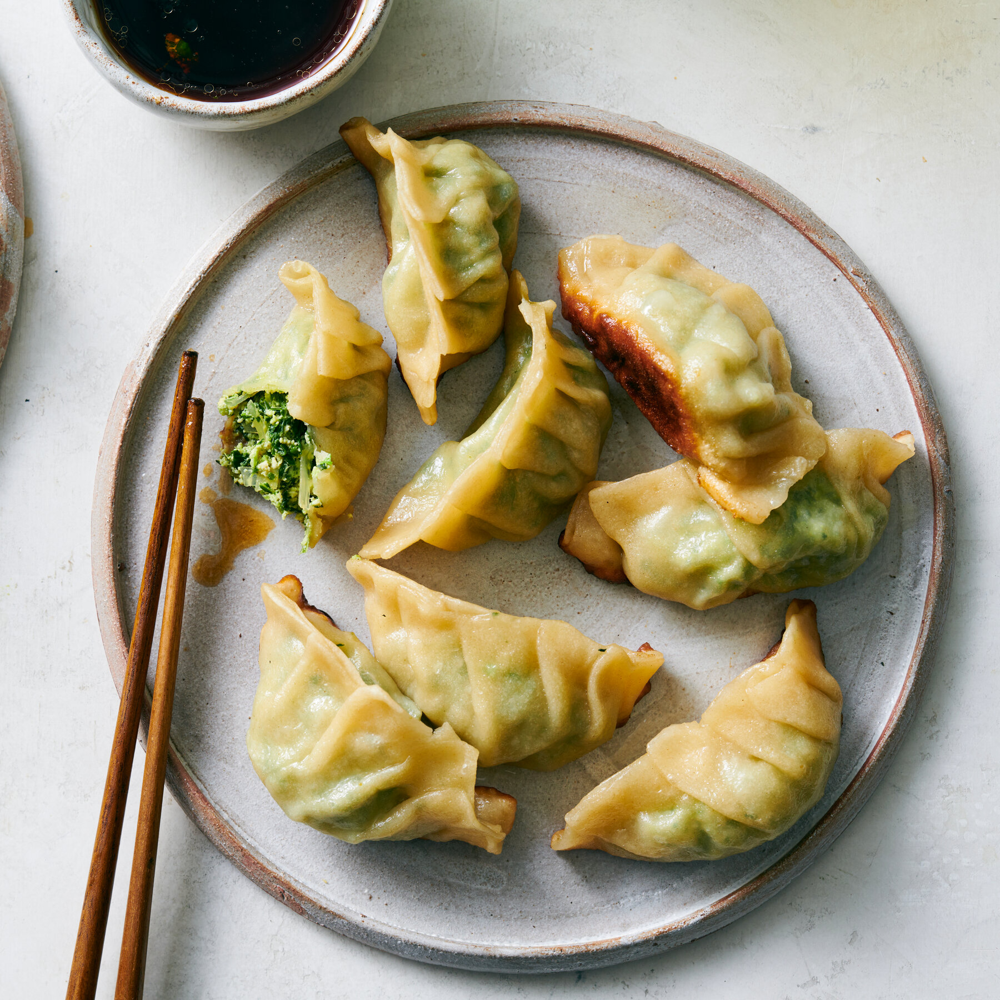

Odin Recipes

Pork Dumplings
Prep Time:45 mins
Cook Time:15 mins
Total Time:1 hr
Servings:10
Yield:100 pork dumplings
For Dumplings:
- 1 pound ground pork
- 3 cloves garlic, minced
- 1 large egg, beaten
- 2 tablespoons finely chopped Chinese chives
- 2 tablespoons soy sauce
- 1 ½ tablespoons sesame oil
- 1 tablespoon minced fresh ginger
- 50 dumpling wrappers
- ½ cup vegetable oil for frying, or as needed
For Dipping Sauce
- ½ cup soy sauce
- 1 tablespoon seasoned rice vinegar
- 1 tablespoon finely chopped Chinese chives
- 1 tablespoon sesame seeds
- 1 teaspoon chile-garlic sauce (such as Sriracha)
- To make the dipping sauce: Combine soy sauce, rice vinegar, chives, sesame seeds, and chile-garlic sauce in a small bowl. Set aside.
- To make the dumplings: Mix pork, garlic, egg, chives, soy sauce, sesame oil, and ginger in a large bowl until thoroughly combined.
- To make the dumplings: Mix pork, garlic, egg, chives, soy sauce, sesame oil, and ginger in a large bowl until thoroughly combined.
- Wet the edge with a little water and crimp together forming small pleats to seal the dumpling. Repeat to form remaining dumplings.
- Heat 1 to 2 tablespoons vegetable oil in a large skillet over medium-high heat. Place 8 to 10 dumplings in the pan and cook until browned, about 2 minutes per side.Heat 1 to 2 tablespoons vegetable oil in a large skillet over medium-high heat. Place 8 to 10 dumplings in the pan and cook until browned, about 2 minutes per side.
- Pour in 1 cup of water; cover and cook until dumplings are tender and pork is cooked through, about 5 minutesPour in 1 cup of water; cover and cook until dumplings are tender and pork is cooked through, about 5 minutes.
- Repeat to cook remaining dumplings, adding more oil and water for each batch.
- Serve dumplings with dipping sauce.
HOME